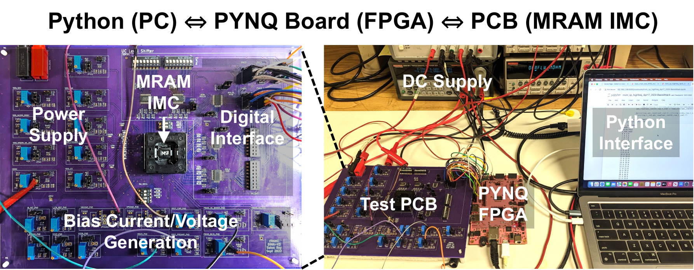
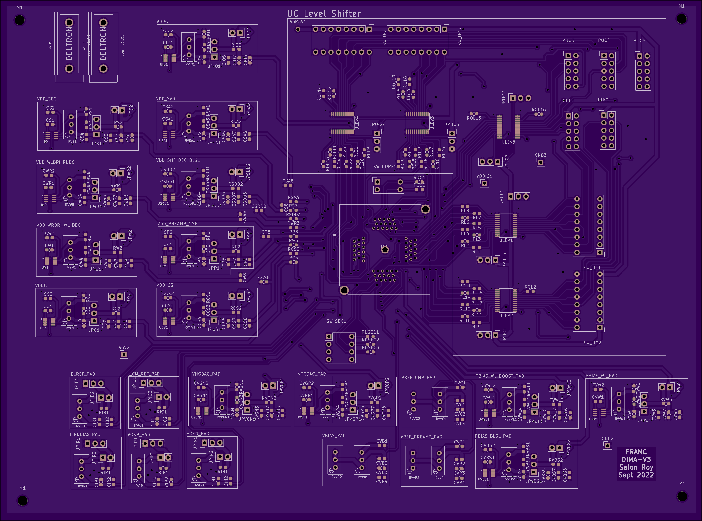
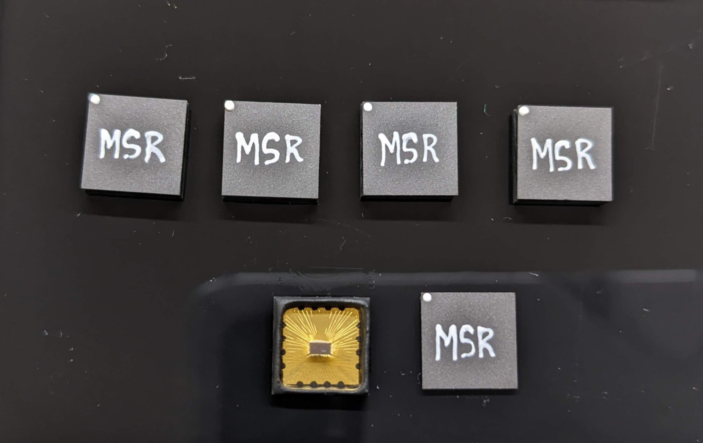

Python host · PYNQ-Z2 · custom PCB · QFN64
Build a trustworthy path from a script to silicon.
The test platform translates an experiment into scan, read/write, MVM, ADC, and SEC transactions—and carries every raw code and configuration detail back into an analysis record.
System stack
Separate experiment intent from electrical transport.
Each layer owns one transformation, localizing diagnosis to experiment protocol, DMA/FPGA transport, board-level electrical mapping, or chip response.
LAYER 01Python host
Declares experiment state, seeds, repetitions, metadata, calibration, and analysis.
LAYER 02PYNQ-Z2
Loads the overlay, transports command/data words, sequences digital timing, and captures results.
LAYER 03Custom PCB
Maps headers to QFN64, distributes rails and references, decouples, and exposes safe checkpoints.
LAYER 04MRAM IMC
Executes memory, conversion, MVM, and SEC operations and returns raw observable state.
Evidence returnRun record + analysis ← raw words + status ← FPGA capture ← chip electrical response
Bidirectional stackCommands move from experiment plan to chip timing; raw ADC codes and metadata move back from the chip to analysis.
One MVM capture
Follow one transaction end to end.
Run ID, chip/board, clock, voltage, SEC state, weight/input vector, and repeat index.
Typed words move through AXI DMA with explicit length, sequence, timeout, and status.
Reset, load, auto-zero, evaluate, SAR conversion, and capture execute in order.
ADC code and status return without analysis-side modification.
Raw result joins configuration digest, overlay hash, timestamp, and fault state.

PCB design
The board is part of the measurement instrument.
The TO3 board connects the QFN64 macro to the PYNQ-Z2 while distributing supplies and references, placing local decoupling, and exposing checkpoints for power, reset, clocks, and bring-up modes.

Make safe states explicit
Name every rail, return path, current limit, ramp order, decoupling role, and expected unconfigured draw.
Preserve timing and references
Control clock/scan edges, level compatibility, ground continuity, crosstalk, and analog-reference quietness.
Probe without perturbing
Expose checkpoints for rails, clocks, reset, and critical modes while managing stub and loading effects.
Bind revision to silicon
Record board revision, assembly variant, package/lot, modifications, overlay hash, and measurement run together.
Board review
Checks before assembly and before power.
Design-release checklist
- QFN64 orientation and pin-one convention match the bond map.
- Every package pin maps to one net, no-connect, or documented reserve.
- Rail names and nominal/absolute limits agree across chip, schematic, BOM, and scripts.
- Interface voltage levels and FPGA bank constraints are compatible.
- Decoupling values and placement are reviewed by rail and load step.
- Return-current paths remain continuous across connector and plane transitions.
- Testpoints are labeled and do not compromise sensitive nodes.
- Fabrication outputs, drill files, stackup, BOM, and assembly drawing share one revision.
Unpowered inspection checklist
- Visual inspection, package orientation, polarity, solder bridges, and rework log.
- Resistance-to-ground and rail-to-rail screening against expected ranges.
- Continuity from FPGA header to key package pins.
- External supplies set to zero volts with conservative current limits.
- FPGA I/O held in a defined high-impedance or safe reset state.
- Oscilloscope/DMM ground strategy reviewed before attaching probes.
- Board ID, chip ID, operator, time, instruments, and ambient recorded.
- Stop conditions and shutdown order visible at the bench.

Bring-up ladder
Bring-up proceeds from power integrity to statistical measurement.
- Apply rails under current limit; verify voltage and quiescent current.
- Assert/reset controls; confirm no unsafe pin contention.
- Validate clock and static GPIO at slow speed.
- Shift a known scan pattern and verify loopback/PASS behavior.
- Read and write one controlled row; repeat after reset.
- Capture raw ADC codes for deterministic low/high states.
- Run a small MVM vector with an analytically known ideal code.
- Only then automate calibration, SEC, and statistical sweeps.
PYNQ control plane
Version the overlay as experimental equipment.
The measured setup uses a PYNQ-Z2 with an XC7Z020 FPGA, a 100 MHz Vivado 2022.2 overlay, AXI DMA, and custom all-pin test logic. The control notebooks sequence scan, read/write, MVM capture, SEC calibration, and network experiments.
Overlay self-check
Confirm board, bitstream/HWH pairing, clock rate, DMA topology, register signature, and a known loopback before chip access.
Typed command framing
Define word width, endianness, opcode, payload length, timeout, and returned status. Reject partial or stale transfers.
Hash every binary
Record overlay digest, PYNQ image, Python/package versions, notebook/script commit, pin-map revision, and clock configuration.
Overlay identityEach capture records the bit/HWH checksums, PYNQ image, clock configuration, pin-map revision, and software commit.
Software construction
Turn notebooks into an auditable measurement framework.
The framework separates five concerns—configuration, transport, protocol, acquisition, and analysis—so each notebook operation becomes a versioned and testable interface.
Describe hardware
Board/chip IDs, endpoints, rail limits, clock, overlay checksum, and instrument resources live in validated configuration.
Move typed data
FPGA, serial, DMA, and instrument drivers expose bounded operations with timeouts and returned status.
Declare a run
Scan, read/write, MVM, calibration, and SEC sequences are pure plans with seeds and stop conditions.
Keep raw evidence
Append-only records store command, response, timestamp, units, configuration digest, and fault state.
Derive results
Calibration and SNDR analysis consume versioned raw data and emit provenance, never silently overwriting it.
Runnable analysis module: deterministic sampling → per-column affine calibration → probability-weighted code error → compute SNDR. Open the artifact map →